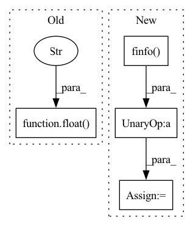

Pattern ID :15518
Before Change
if exists(mask):
mask = rearrange(mask, "b n -> b () () n")
dots.masked_fill_(~mask, float("-inf" ) )
attn = dots.softmax(dim = -1)
out = einsum("b h i j, b h j d -> b h i d", attn, v)After Change
dots = einsum("b h i d, b h j d -> b h i j", q, k) * scale
if exists(mask):
mask_value = -torch.finfo(dots.dtype).max
mask = rearrange(mask, "b n -> b () () n")
dots.masked_fill_(~mask, mask_value)
attn = dots.softmax(dim = -1)In pattern: SUPERPATTERN
Frequency: 3
Non-data size: 4
Instances Fragment ID: 52567523
Project Name: lucidrains/isab-pytorch
Commit Name: 9968cf73e2483cf9326546ba703eaec51e34bdd6
Time: 2020-12-14
Author: lucidrains@gmail.com
File Name: isab_pytorch/isab_pytorch.py
M Class Name: Attention
N Class Name: Attention
M Method Name: forward(4)
N Method Name: forward(4)
M Parent Class: nn.Module
N Parent Class: nn.Module
M File Name: isab_pytorch/isab_pytorch.py
N File Name: isab_pytorch/isab_pytorch.py
M Start Line: 34
M End Line: 34
N Start Line: 30
N End Line: 35
Before Change
mask = mask_q[:, None, :, None] < mask_k[:, None, None, :]
mask = F.pad(mask, (1, 0), value=True)
dots.masked_fill_(~mask, -float("-inf" ) )
del mask
// attentionAfter Change
// attention
dots = torch.einsum("bhid,bhjd->bhij", q, k) * d ** -0.5
mask_value = -torch.finfo(dots.dtype).max
// causal masking, if needed
if self.causal:
mask_q = mask_k = torch.arange(t, device=device) Fragment ID: 52567526
Project Name: lucidrains/memory-compressed-attention
Commit Name: 49d2e7497721f4d6353fe59b4dc636260c627b48
Time: 2022-08-18
Author: lucidrains@gmail.com
File Name: memory_compressed_attention/memory_compressed_attention.py
M Class Name: MemoryCompressedAttention
N Class Name: MemoryCompressedAttention
M Method Name: forward(3)
N Method Name: forward(3)
M Parent Class: nn.Module
N Parent Class: nn.Module
M File Name: memory_compressed_attention/memory_compressed_attention.py
N File Name: memory_compressed_attention/memory_compressed_attention.py
M Start Line: 78
M End Line: 90
N Start Line: 65
N End Line: 92
Before Change
mask = F.pad(mask.flatten(1), (1, 0), value = True)
assert mask.shape[-1] == dots.shape[-1], "mask has incorrect dimensions"
mask = mask[:, None, :] * mask[:, :, None]
dots.masked_fill_(~mask, float("-inf" ) )
del mask
attn = dots.softmax(dim=-1)After Change
q, k, v = map(lambda t: rearrange(t, "b n (h d) -> b h n d", h = h), qkv)
dots = torch.einsum("bhid,bhjd->bhij", q, k) * self.scale
mask_value = -torch.finfo(dots.dtype).max
if mask is not None:
mask = F.pad(mask.flatten(1), (1, 0), value = True)
assert mask.shape[-1] == dots.shape[-1], "mask has incorrect dimensions" Fragment ID: 52567524
Project Name: lucidrains/vit-pytorch
Commit Name: 6c8dfc185ea41f4d2388e4d33bbb76f900ff8a0a
Time: 2020-11-13
Author: lucidrains@gmail.com
File Name: vit_pytorch/vit_pytorch.py
M Class Name: Attention
N Class Name: Attention
M Method Name: forward(3)
N Method Name: forward(3)
M Parent Class: nn.Module
N Parent Class: nn.Module
M File Name: vit_pytorch/vit_pytorch.py
N File Name: vit_pytorch/vit_pytorch.py
M Start Line: 59
M End Line: 59
N Start Line: 53
N End Line: 60